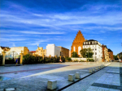
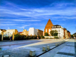

Wrocław
 

(łac. Vratislavia lub Wratislavia lub Budorgis, niem. Breslau Breslau i, dś. Brassel, cz. Vratislav, węg. Boroszló) – miasto na prawach powiatu w południowo-zachodniej Polsce, siedziba władz województwa dolnośląskiego i powiatu wrocławskiego. Położone w Europie Środkowej, na Nizinie Śląskiej, nad rzeką Odrą i czterema jej dopływami. Jest historyczną stolicą Dolnego Śląska, a także całego Śląska.
Jest głównym miastem aglomeracji wrocławskiej, a także największym miastem leżącym na Ziemiach Odzyskanych. Czwarte pod względem liczby ludności miasto w Polsce – 640 648 mieszkańców[3], piąte pod względem powierzchni – 292,82 km².
Miasto było stolicą księstwa wrocławskiego, siedzibą władz pruskiej prowincji Śląsk i rejencji wrocławskiej. Od 28 czerwca 1946 stolica województwa wrocławskiego. Od 1 stycznia 1999 stolica województwa dolnośląskiego, należy do Unii Metropolii Polskich i Eurocities.
W rankingu opublikowanym przez Globalization and World Cities Research Network, Wrocław został sklasyfikowany w X kategorii (Gamma −) miast o znaczeniu globalnym.
Wrocław został sklasyfikowany w pierwszej setce miast świata w rankingu firmy doradczej Mercer „Najlepsze miasta do życia” w 2015, 2016 i 2017, a także w pierwszej setce najbardziej inteligentnych miast na świecie (smart city) w raporcie IESE Cities in Motion Index 2017. Był też – w roku 2016 – Europejską Stolicą Kultury.